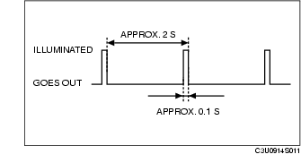
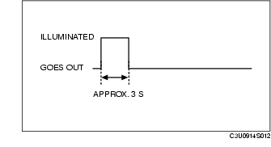
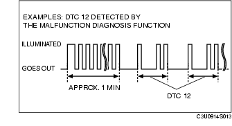

Security light construction/operation
Construction
• Allows visual confirmation of immobilizer system operation.
• If any malfunction is detected in the immobilizer system, the malfunction location can be verified by the security light flashing pattern.
- • If there is security light system malfunction, DTCs may not be properly displayed. Always use the WDS or equivalent to verify DTCs.
Operation
• When the immobilizer system is operating, the security light flashes repeatedly 0.1 s every 2 s.

• When the immobilizer system is released normally, the security light illuminates for 3 s and then goes off when the ignition switch is turned to the ON position.

• If the immobilizer system is not released normally (malfunction detected by the malfunction diagnosis function), the security light displays a DTC. If this occurs, the security light flashes for 1 min and then displays the DTC when the ignition switch is turned to the ON position.
